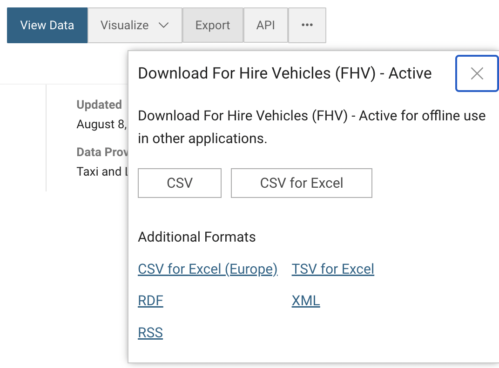
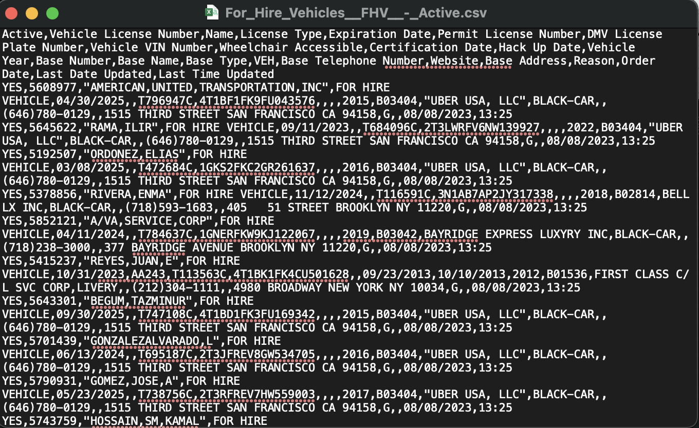
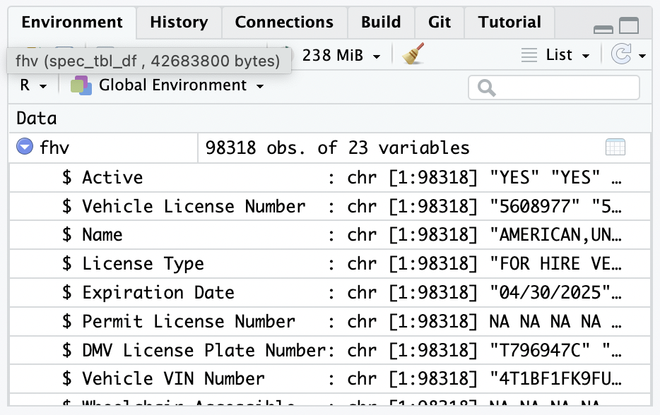
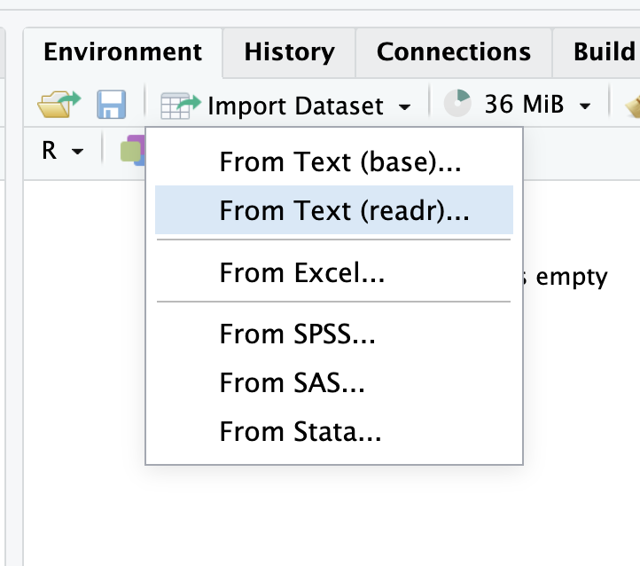
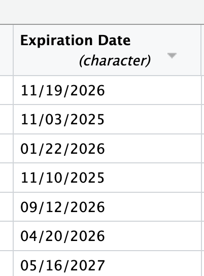
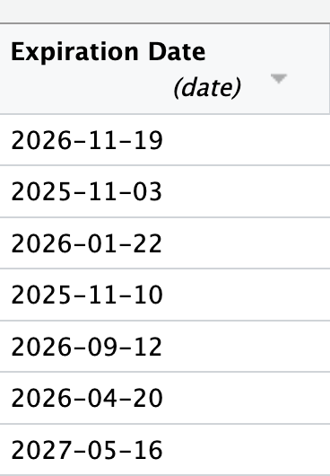
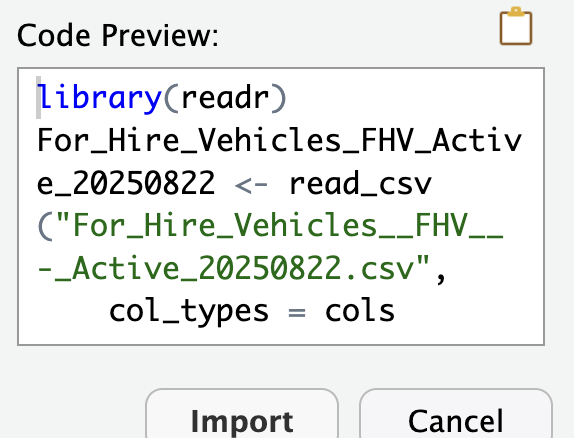

library(tidyverse)4. Reading Data and Data Types
Video Tutorial
Reading Data
We can use R to read in a number of different types of data, manipulate it, and output it in different ways.
The core type of data we will be using in this class is the .csv or a comma separated values file. A .csv is a text file where each observation is in its own row and each variable or value is, you guessed it, separated by a comma. R can read these types of files in super easily. Let’s download our first comma separated file from the NYC Open Data Portal.

Let’s download the data on for hire vehicles in NYC and read it into R.

If we open a csv in a text editor it looks like this, but R will read it into something called a dataframe which is the tidy format for tabular data (data that has rows and columns).
To read data into R, we are going to need the function read_csv() and need to learn about file paths.
In order for R to read in the file, we need to tell R where the file is. We can do that with an absolute or a local path. An absolute path is the exact location of the file on your computer.
⚠️ Note: when Patrick recorded this video, only the RStudio screen was shared and the recording didn’t capture his Finder windows. You can read the description of what happened below.
For me, when I downloaded this file it went to my downloads folder - a path that looks something like this: /Users/patrickspauster/Downloads/For_Hire_Vehicles__FHV__-_Active.csv. You can look up the path to a file by navigating to the file in Finder or Windows Explorer and right clicking to “Get Info”. I could read it in by using read_csv("/Users/patrickspauster/Downloads/For_Hire_Vehicles__FHV__-_Active.csv").
But, not everyone who views my work or wants to run my code will have the same file structure on their computer. If I sent this code to someone and they tried to run it, they would get an error. That’s where the R project and a local path comes in handy.
Now, save a copy of For_Hire_Vehicles__FHV__-_Active.csv to your project folder. When you do, you should see it appear in the file explorer in the bottom right of your R Studio window. Now we can access the .csv using a local path. Because we have the R project open, R will start looking in the project folder. Now we can run read_csv on our file without having to look up the path.
(Remember to load the tidyverse first! If you get an error like “the function function_name can’t be found”, you probably forgot to load the proper package with library()!)
read_csv("For_Hire_Vehicles__FHV__-_Active.csv")Let’s take a closer look at what read_csv() is doing.
?read_csv()The function has one required argument, “file” and several optional arguments that we can change. The “file” argument asks for a path to a file as a “string” - remember if you see the words “character” or “string” think quotes. So let’s feed read_csv() the name of the file we want to read in in quotes, and assign it to something using our assignment operator <- so we can further modify it.
fhv <- read_csv(file = "For_Hire_Vehicles__FHV__-_Active.csv")(Aside - naming things is hard, and you will have to name a lot of different objects. Some general rules - don’t use spaces, and try to keep the names simple but informative, and be careful about overwriting the same name)
Now, fhv is an object in our environment. R gives us some helpful details about the object in the environment menu and the dropdown arrow on the object itself.

R tells us how many observations (rows) and variables (columns) this object has - note how this is a “tidy” dataset. If you hover over the object itself, it will tell you the type of object and its size. In this case we have a dataframe, the tidy format for data in R, often abbreviated df. You can confirm this by running the function is.data.frame() which identifies if an object is of a certain type.
is.data.frame(fhv)Reading different types of data
read_csv() is smart, but not perfect. You’ll notice that it has tried to identify the types of data in this dataframe. The Vehicle Year is read in as a num because it is made up of all digits. It correctly identified that Last Time Updated is a Date in the format hms (hours:minutes:seconds). And the DMV License Plate Number is a chr (character), because it is a categorical string variable.
Numbers, characters, and dates, are three fundamental types of data that we will be using in R. We can use some of the other arguments of read_csv() to make sure that we get columns in the correct format. For example, it missed that Expiration Date should be a date.
When you start getting long arguments, and nested functions, it can be helpful to enter between each argument.
Here is the syntax to read in Expiration Date as a date instead of a character data type.
fhv <- read_csv(file = "For_Hire_Vehicles__FHV__-_Active.csv",
col_types = cols(`Expiration Date` = col_datetime(format = '%m/%d/%Y'))
)
#col types takes one argument - cols. cols() is a named list with the variable = the column's format.
#we'll learn more about how to parse dates and date data types in lesson 12Note: Be careful with R defining data as numeric when it should really be a character. For example the zip code “06810,” if read in as a number, will turn into the 6,810. So it needs to be defined as a character to retain that leading zero. You can change the default col_type using col_type = cols(.default = col_character()). You can always change the types of columns back to numbers later.
The Import Dataset tool
RStudio also has a tool that can help you define data types called Import Dataset. You can find it in the Environment window. Click Import Dataset and then From Text (readr).

When the window opens up, click Browse and select your CSV to open (it should appear immediately because you should already have brought it into your project folder).
You’ll then see your data previewed. Each column has an assigned data type that R has guessed. You can see that it has assigned Expiration Date the type character. You can click on that column header and select Date instead.

Another window will pop up with a format of %m/%d/%Y, which is correct (more on date formats here). Click OK.
You will then see that the data type now shows date and the values are formatted differently. That means it worked.

The Import Text Data window will display code in the lower left-hand side that you can copy (don’t simply click Import, as the code will run but the window will disappear and you’ll lost the code it produced).

Paste the code into your script. You can delete library(readr), edit the automatically generated object name, and delete View(For_Hire_Vehicles_FHV_Active_20250822).
fhv <- read_csv("For_Hire_Vehicles__FHV__-_Active.csv",
col_types = cols(`Expiration Date` = col_date(format = "%m/%d/%Y"))) More data types
Here’s a brief look at some other object types you might find in R.
A value is just one number, stored in an object.
my_value <- 42
my_valueA list is a group of values put together, separated by commas. In R the syntax to create a list starts with c(). They are also called vectors in R.
my_character_vector <- c("Patrick", "Lucy", "Henry", "Ceinna")
my_character_vector
my_numeric_vector <- c(1, 3, 5, 7, 9, 11, 13, 17)
my_numeric_vectorVectors can be named or unnamed. Named vectors are pairs of keys (names) and values separated by =.
named_vector <- c("Patrick" = 42, "Lucy" = 12, "Ceinna" = 56, "Henry" = 44)
named_vectorYou can get a vector of a particular variable in a dataframe by using $ with the dataframe name and the variable name.
printme <- head(fhv)
printme$`Base Name`
#head() only keeps the first few rows of a dataframeYou’ll also notice an important type of data - missing data - noted in R as NA. In this dataset the Wheelchair Accessible column is missing for the first few observations. This means that there is no value for that observation and variable. NA values in R are sticky, meaning that unless you tell R to ignore them, R will carry them through all your operations and maybe mess up some of your calculations. For example…
1 + 2 + NA
sum(1,2,NA) #you should be able to figure this out based on what we've learned about functions so far!
sum(1,2,NA, na.rm = TRUE) #the na.rm = T argument removes NAs from a calculation.